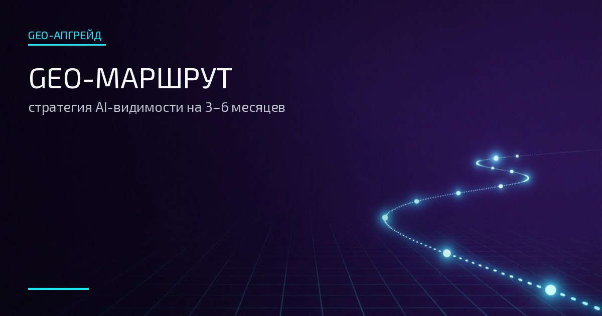

Компании после GEO-сканера
Нужен план действий вместо отчёта ради отчёта

GEO ROUTE · СТРАТЕГИЯ
Включает полный GEO-сканер, аудит контента, аудит ответов AI и отзывов, дорожную карту с приоритетами, сроками и точками контроля.
Для брендов, которые планируют долгосрочное GEO-продвижение и хотят работать по карте, а не по догадкам.
SERVICE BRIEF
«GEO-маршрут» — стратегия видимости бренда в AI на 3–6 месяцев. Это не список советов, а карта: что проверили, где бренд теряет сигналы, что делать в первую очередь и как измерить результат.
В основе — полный GEO-сканер и аудит контента. Маршрут отвечает на вопрос «что делать каждый месяц» и даёт команде задачи с точками контроля.
SERVICE CARD
| Формат | Удалённо, онлайн |
| Срок | 7–12 рабочих дней |
| Стоимость | 18 000 – 27 000 ₽ |
| Основа | Полный GEO-сканер + аудит контента |
| Горизонт | Дорожная карта на 3–6 месяцев |
WHO IT'S FOR
Нужен план действий вместо отчёта ради отчёта
Карта на 3–6 месяцев с точками контроля
Понятный маршрут без найма большой команды
Приоритеты: с чего начать при ограниченном бюджете
Готовая стратегия для защиты перед руководителем
WHAT'S INSIDE
PROCESS
DELIVERABLES
INVESTMENT
Срок: 7–12 рабочих дней
Итоговая стоимость зависит от объёма задачи, сложности ниши, количества направлений, AI-систем и глубины анализа. Точный расчёт — после короткой вводной сессии.
Оставить заявкуHONEST BOUNDARIES
FAQ
Нет: полный GEO-сканер уже включён в услугу.
Тем, у кого диагностика есть (или будет), а нужен план: приоритеты, календарь, метрики и точки контроля на 3–6 месяцев.
Маршрут — карта действий, которую выполняет ваша команда. Тест-драйв — пилот с нашим внедрением, сопровождением и повторным замером.
Закажите GEO-маршрут — получите стратегию с приоритетами, метриками и точками контроля.
Обсудить маршрутЗаявка оформляется через форму на странице контактов.